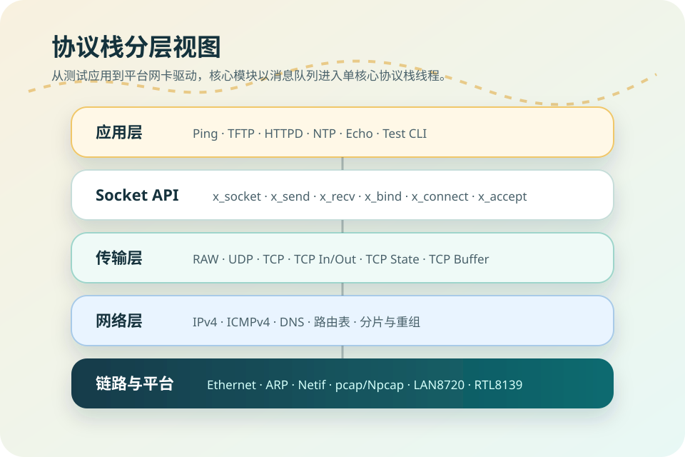
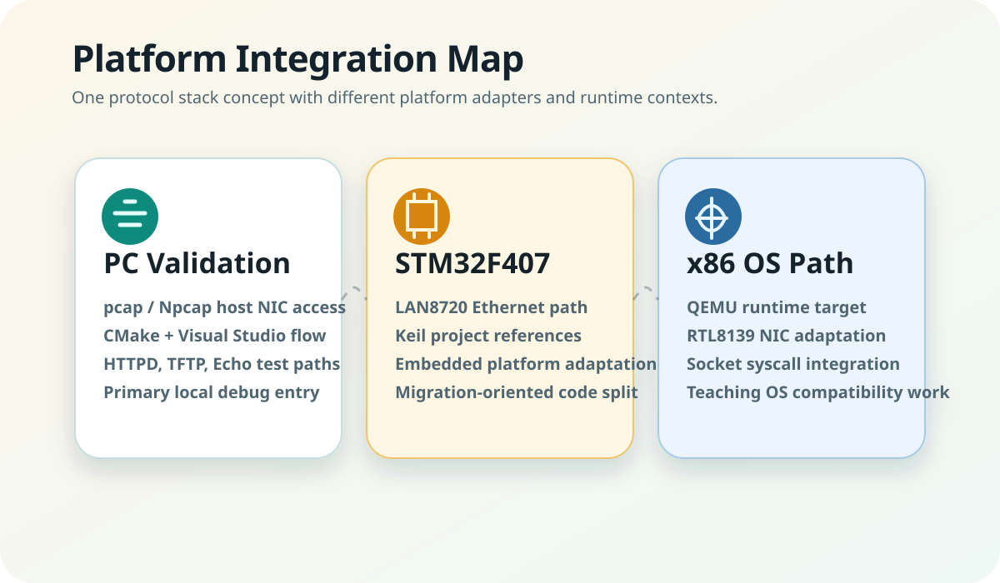
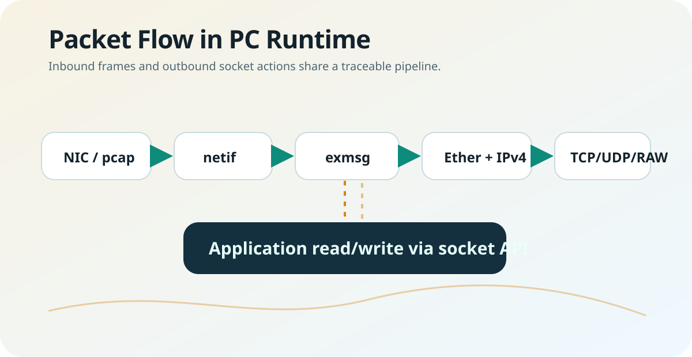

协议实现可读
核心模块覆盖 Ethernet、ARP、IPv4、ICMPv4、RAW、UDP、TCP、DNS 和 Loopback，适合逐层调试。
一个面向学习、实验和移植验证的 C 语言网络协议栈工程。它不是营销式“全能网络库”，而是一套能看见 ARP、IPv4、ICMP、UDP、TCP、DNS 和应用样例如何协作的工程化代码。
cd code/pc
cmake -S . -B build
cmake --build build
cd work
../build/net
>> ping 192.168.74.3
>> tftp-get test.bin
>> time any协议栈核心、平台适配层和应用测试层分离，便于在 PC 上调试，再迁移到嵌入式或教学 OS 环境。

仓库不是单一 demo，而是保留了 PC 测试工程、STM32F407 移植和 x86 OS 集成代码，适合对照平台差异。

页面只展示仓库里已经存在的模块，不把学习工程包装成生产级网络协议栈。
核心模块覆盖 Ethernet、ARP、IPv4、ICMPv4、RAW、UDP、TCP、DNS 和 Loopback，适合逐层调试。
PC 端入口包含 Ping、TFTP、HTTP 静态文件服务、NTP、TCP/UDP Echo 等测试路径。
平台相关代码集中在 plat/netif 侧，PC 使用 pcap/Npcap，STM32 连接 LAN8720，x86 OS 面向 RTL8139。
外部网卡输入和应用 Socket API 请求最终都进入核心线程处理，方便观察协议栈调度模型。

PC 端是最适合本地体验的入口。运行前需要根据本机网卡修改 `sys_plat.h` 中的 IP 参数。
`code/pc` 使用 CMake 构建，默认通过 pcap/Npcap 访问真实网卡。运行时建议从 `code/pc/work` 启动，HTTP 服务会读取该目录下的 `htdocs`。
# Windows / Linux / macOS 基本流程
cd code/pc
cmake -S . -B build
cmake --build build
# Windows Visual Studio Debug 输出通常位于 build/Debug/net.exe
# Linux/macOS 输出通常位于 build/net
mkdir -p work/tftp
cd work
../build/net